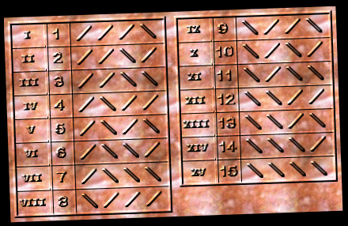

ここではSample Action Gameについて、よくある質問をお知らせします。
１．プログラムに関すること
１．起動すると、とてもスローモーションとなってしまいます。
実行環境が非力の可能性があります。本ゲームは描画処理に依存する箇所が多いので、グラフィック表示に特化していないOS(Linux等)やビデオカードが2000年前後程度のものだと、動作的に限界がある場合があります。
もしもプレー中にF3キーを押して、背景を限界まで表示しない状態でも改善されない場合は、残念ながらプレーを諦めてください。
２．ブラウザで起動したいのですが、アプレットとして実行できないのでしょうか？
申し訳ございません。2006/12現在、製作者のスキル不足でアプレット化が行えない状況です。
元々設計としてファイル操作があったので、このように設計していなかったことや、アプリケーションとアプレットを同時に実現する設計をしていなかったのが失敗の原因です。
２．ゲーム内容に関すること
１．キーボードで操作するのが難しすぎます。
できればジョイスティックなどでプレーしたいのですが...
本ゲームはキーボードのみ対応しています。
しかしながら、キーボード入力をジョイスティックで操作するためのソフトウェアを開発している方がいらっしゃるようです。googleなどで「Joy To Key」などで検索を行うとソフトが見つかるかもしれません。
２．Stage 08のスイッチのある部屋のクリア方法が分かりません。
Stage 08のスイッチは背景の壁画と関連しています。これはローマ数字となっていて、スイッチがコンピュータの2進数に対応しています。
この壁画数字の上にある○がスイッチONの方向を表しており、○が左にある場合は左側がONとなります。
以下に○が左にある場合の数字表を記載します。

例)
- ○が左でVIIの場合 → ７ → 『／ ＼ ＼ ＼』
- ○が右でXの場合 → 10 → 『／ ＼／ ＼』 (ONが右になるので上の表の逆になります)
もしもコンピュータの2進の意味が分からない場合は、15種類のスイッチの組み合わせを剣でガンガン合わせて切り抜けましょう！